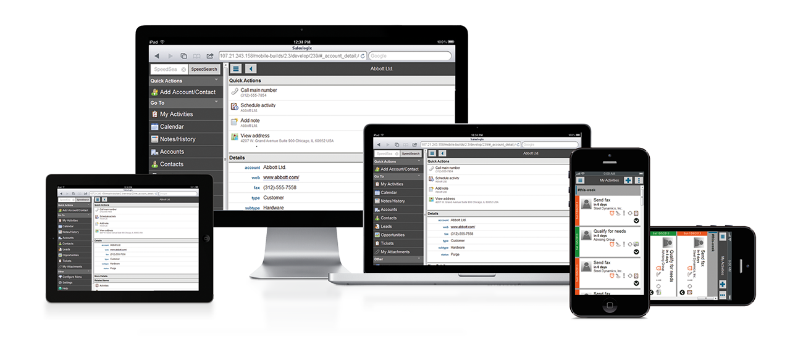
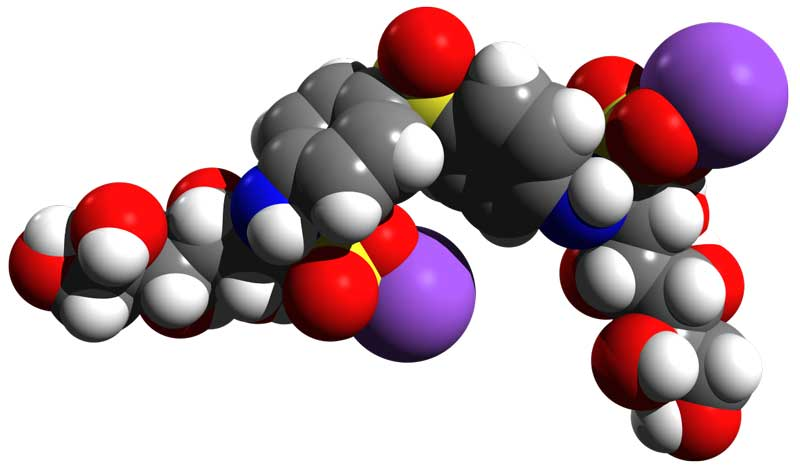

Valentyn ShybanovTwinfield, Software Architect.Twinfielda Walters Kluwer businessHow to build large-scale enterprise SPA applications with AngularJSMVVModelodeliewiewWe sellCapabilitiesDon't spend resourcesOn something you can't sellOutsource?QualityModelViewModelViewSemantic information about model that can be used by ViewGeneric solution for all possible combinationsProperties of real-world entities2013Management: Not easy to persuade management to focus on more long-term benefits instead of
having added value «right now».We make it too «permissible» — even simple rules were violated because developers tend to implement
requested features fastest way (in their point of view) resulting many different implementation of same things
(so in company-wise scale things becomes longer to implement)We created lots of stale documentation — style guides, mockups, but:— It becomes bigger and bigger, so harder to maintain (especially screenshots)— Developers used to implement mockups provided by designers not diving into semanticsNextConcentrate on CoreExplain Why to involved peopleSharable Reusable Bower ComponentsOur implementationhttp://olostan.name/http://twinfied.com/Twinfield UI: How to build large-scale enterprise SPA applications with AngularJS.In Twinfield we are building large web application We're constantly looking the way how
make developing faster but keeping quality on very high level.We found the way: use MVVM patternMVVM stands for "Model", "View" and "ViewModel"So why we decided that it is the best way?We sell capabilities, not visual controls or componentsMore "pages" with unique components you produce, more waste is added into your application, as
you can't sell these unique components.One of obvious solutions is to outsource this kind of things: let UI-specialized companies
produce visual pages so you can concentrate on business valueIn this case you can face such problems, as: code quality. It can look perfect, but
inside you can find a lot of "strange" things. Spend resources on review? Again waste.Your product bound to decisions made not by you. Switching to something new
can require rewriting "pages" that is your business value (not components!)
Multiple platforms? Again you need to spend resources for each screen. Do you beleave in myth
"write once, run everywhere"?
Let's try Divide And Conquer! More you devide, more freedom have each piece, but you rule them all.Business guys can concentrate on business entities, workflows. Let them think like there is no
any UI. Express User Stories not as screens, but as buisness workflowVisual designs should be recognisable (buyable) so you should hold
from «very specific solutions for this specific screen» (Even if you really really want to!).
Let designers (UX specialists) concentrate on solving usability tasks of your application, not
tasks of some— specific screen (example: if I have an entity I want to edit, and this entity has
non-fixed collection of data grouped by some meaning - Customer and Addresses).Let good skilled Front-End developers bind these things (and only them). Let them
do what they are best to do: think how bind components, how to react on user interaction. Moving out
burden from their shoulders can give them wings - best web solutions, technologies.Thats exaclty how we, in Twinfield understand MVVM concept!There are couple of simple rules everyone should followWe starting implementhing this principle at 2013....and found couple of issues you should be aware ofThough I like «lean way» of development software, but developing core parts require
very careful design and implementation you can't skipIn Twinfield we're trying to be constant-innovating, always trying to
answer the question "Can we do better?"Core should be composable from different functional capabilities. It should
detect common mistakes and adapt on VM/V/M. DRY. Clean dependencies.People should understand how to turn constraints into featuresMove involved people - more mature core and richer application isThis is simplest view-model represending form with one inputAfter processing by AngularJS, it is transformed more
classic "view model" as object. Note: there is no AngularJS-bindings. Just meta-informationLater this object is used by view where actual binding is done.More complex example: there is a collection (repeater?). Again - no repeating, no
binding in ViewModel (there is no data yeat!). Note - we're switching context!Validation. It is not part of form specification, but can be defined out of form.
View (Form in this example), can use these rules. Also these rules could be re-used. Note again: VM is
converted to object, so you can reference other VMs without requiring any data form these VMs.
Thats all for now. I hope you enjoyed!
{
"controller":"nfCustomerFormController",
"sections":[
{
"caption":"Customer",
"controls":[
{
"templateType": "input",
"fieldType": "text",
"bind": "name",
"context": "Customer",
"showIf": true,
"placeholder": "Customer name"
}
]
}
]
}